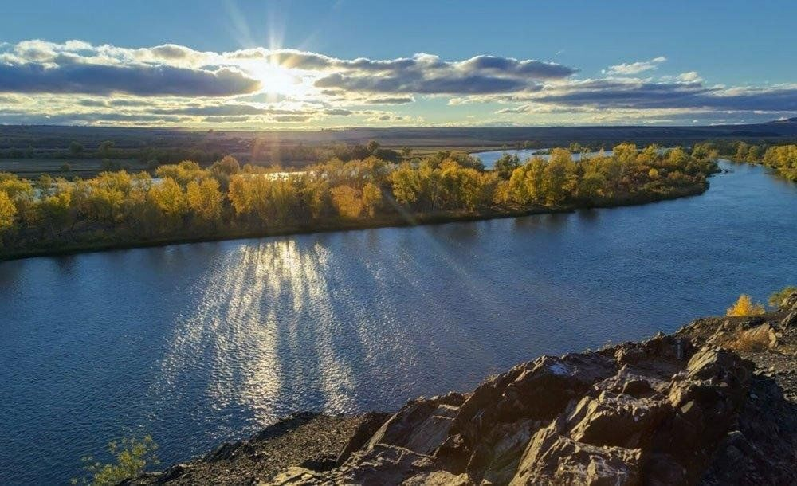
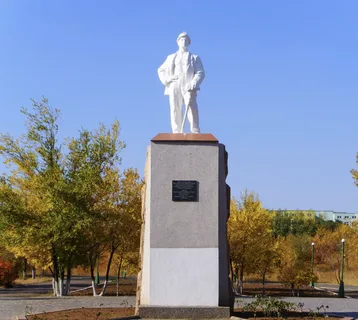

О городе
Экибастуз — город в Павлодарской области Казахстана, известный как центр энергетики и угольной промышленности. Город образован в середине XX века вокруг строительства угольной шахты и электростанций.
История
В 1948 году на месте будущего города началась разработка крупных угольных месторождений. В 1957 году Экибастуз получил статус города. С тех пор он стал важным промышленным и энергетическим центром Казахстана.
Достопримечательности
-

Река Иртыш - река протекает рядом с городом, популярное место для отдыха и рыбалки.
-

Памятник шахтёрам - памятник в честь строителей шахт и электростанций, символ трудовой доблести города.
Культура
В Экибастузе проводятся городские праздники, концерты, выставки и спортивные мероприятия. Город объединяет промышленное наследие с современными культурными объектами.
Интересные факты
- Экибастуз — центр угольной энергетики Казахстана.
- Город возник вокруг одной из крупнейших угольных шахт.
- Здесь находятся большие электростанции страны.